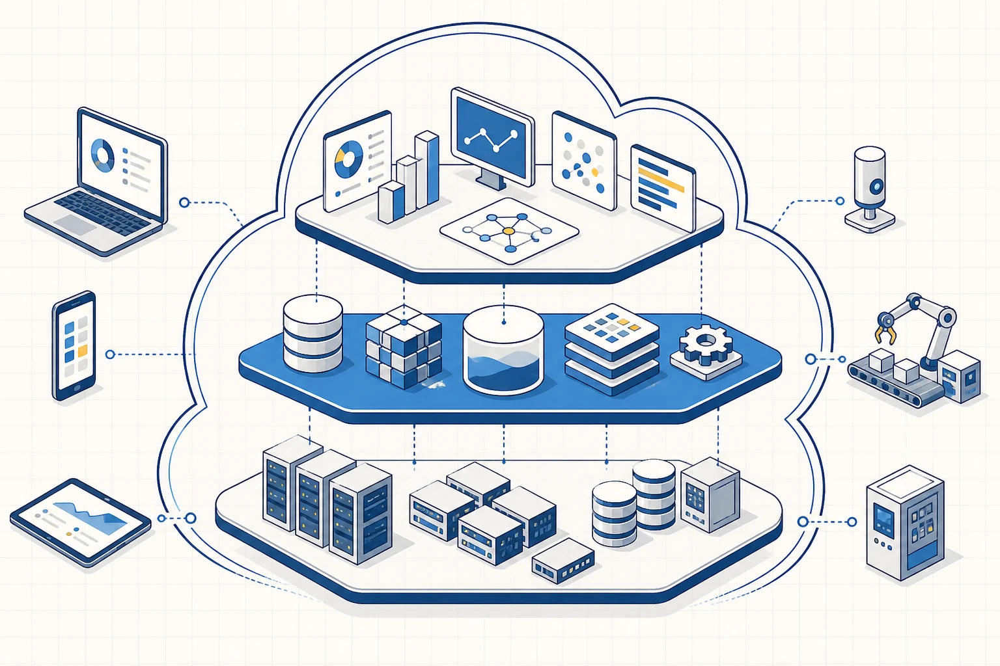
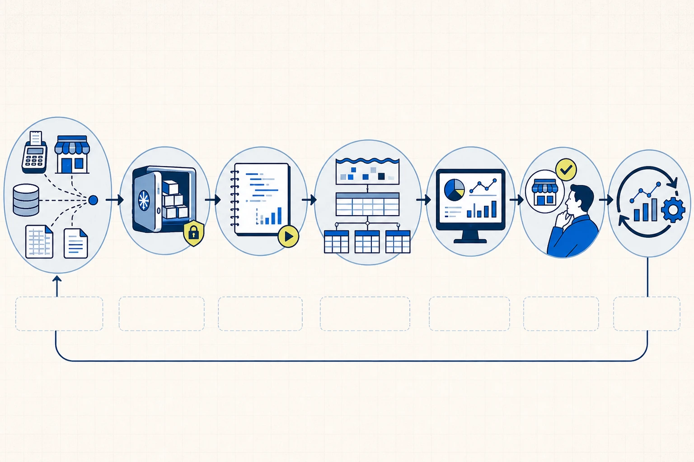

La arquitectura responde a requisitos
Una arquitectura de datos describe cómo se originan, se transportan, se almacenan y se usan los datos. También asigna responsabilidades y controles. Su representación puede incluir sistemas, archivos, bases, procesos de transformación, modelos analíticos y herramientas de consumo.
El diseño comienza con una decisión. Si la dirección de Faro Sur revisa margen por familia una vez por semana, la arquitectura necesita integrar ventas y costos con esa frecuencia, conservar una copia reproducible y entregar un modelo que permita comparar períodos. Un flujo en tiempo real agregaría costo y operación sin cambiar la decisión semanal.
Los requisitos principales surgen de preguntas concretas. ¿Quién consume la información? ¿Qué fuentes participan? ¿Qué representa cada fila? ¿Cuánta demora es tolerable? ¿Qué volumen existe y cómo crece? ¿Qué nivel de disponibilidad requiere el proceso? ¿Qué datos necesitan protección? ¿Qué capacidades tiene el equipo que operará la solución?
La arquitectura proporcional satisface esos requisitos con una cantidad de componentes que el equipo puede comprender y mantener. Una práctica académica o una empresa mediana puede trabajar con archivos versionados, DuckDB y Power BI. Una plataforma global que procesa millones de eventos por segundo enfrenta otra escala, otras obligaciones y un presupuesto diferente. El dibujo técnico adquiere valor cuando permite explicar esa relación entre requisitos y decisiones de diseño.
El ciclo de vida del dato
El ciclo de vida sigue al dato desde su generación hasta su eliminación o archivo. Cada etapa cambia alguna propiedad del registro y puede introducir controles.
| Etapa | Pregunta principal | Ejemplo en Faro Sur |
|---|---|---|
| Generación | ¿Qué hecho registra el proceso? | un pedido confirmado |
| Captura | ¿Cómo sale del sistema fuente? | una exportación CSV o una API |
| Almacenamiento | ¿Dónde se conserva? | carpeta versionada o base de datos |
| Transformación | ¿Qué reglas se aplican? | tipos de fecha, nombres y cálculo de venta neta |
| Modelado | ¿Cómo se organiza para consultar? | vista de ventas o esquema estrella |
| Análisis | ¿Qué comparación se ejecuta? | margen por familia y período |
| Consumo | ¿Quién utiliza el resultado? | responsable comercial |
| Retención | ¿Cuánto tiempo permanece disponible? | política de archivo del histórico |
La generación ocurre dentro de un proceso operativo. Un pedido aparece porque una persona o una aplicación confirma una transacción. La captura extrae o transmite el registro mediante un archivo, una consulta, una réplica, una API o un evento. En ese paso conviene conservar la referencia a la fuente y al momento de extracción.
El almacenamiento mantiene una copia con políticas de acceso, respaldo y retención. La transformación corrige tipos, normaliza nombres y aplica reglas conocidas. Una transformación puede convertir el texto 2026-08-12 en una fecha, asociar un código de cliente con su maestro y calcular la venta después del descuento.
El modelado organiza datos para una clase de preguntas. El modelo puede preservar entidades operativas o construir una tabla analítica centrada en ventas. El análisis utiliza ese modelo para explorar, comparar y validar. El consumo entrega un reporte, una alerta, un modelo predictivo o una interfaz a la persona o sistema que actúa.
La retención cierra el ciclo. Algunos datos deben conservarse por obligación. Otros pierden valor y aumentan exposición. Archivar o eliminar también forma parte del diseño.
El grano, la latencia, la calidad y los permisos pueden cambiar durante el recorrido. Una arquitectura clara permite señalar dónde ocurrió cada cambio.
Roles del ecosistema de datos
Los roles agrupan responsabilidades frecuentes. Sus límites dependen del tamaño y de la madurez de la organización. En una empresa pequeña, una misma persona puede cubrir varios tramos. En una organización grande, cada tramo puede pertenecer a equipos especializados.
Data Analyst
La persona analista traduce una necesidad de negocio en preguntas que pueden responderse con datos. Explora fuentes, escribe consultas, define métricas y comunica hallazgos. Su trabajo incluye declarar límites y recomendar acciones que la evidencia sostiene.
En Faro Sur, el Data Analyst puede recibir la preocupación por el margen, documentar la fórmula, consultar la vista de ventas y comparar familias. También debe advertir que una asociación entre descuento y margen requiere considerar costo y mezcla de productos.
Data Engineer
La persona de ingeniería de datos construye y opera los mecanismos que integran fuentes. Diseña almacenamiento, automatiza pipelines y gestiona confiabilidad, rendimiento y seguridad. Su responsabilidad incluye que el dato llegue con la frecuencia acordada y que los fallos sean observables.
Para Faro Sur, este rol podría automatizar la extracción del sistema de pedidos, conservar snapshots y preparar tablas tipadas. También establecería controles sobre cantidad de filas, claves y fechas.
Analytics Engineer
La persona de analytics engineering transforma datos integrados en modelos analíticos reutilizables. Trabaja sobre definiciones de negocio, pruebas y documentación. Su aporte reduce la repetición de lógica: la fórmula de venta neta o el criterio de pedido válido se implementan una vez y quedan disponibles para varios análisis.
En el caso, puede construir vw_ventas, documentar su grano y agregar pruebas que detecten claves duplicadas o valores imposibles.
Responsabilidad de negocio y colaboración
El responsable de negocio define el objetivo, valida las reglas y decide. El conocimiento técnico permite implementar una métrica; la autoridad sobre su significado pertenece al proceso que la utiliza. Si Comercial y Finanzas emplean costos distintos, la arquitectura debe registrar la definición elegida y sus usos autorizados.
La colaboración se vuelve visible mediante cuatro preguntas: quién aprueba una definición, quién mantiene cada tramo, quién responde ante un incidente y quién revisa una salida de IA. Una matriz de responsabilidades evita que un resultado quede sin dueño.
Sistemas operacionales y sistemas analíticos
Un sistema operacional registra la actividad cotidiana. Prioriza transacciones consistentes y respuestas rápidas para aplicaciones. Un sistema de pedidos debe crear una orden, actualizar su estado y evitar referencias inválidas. Su modelo suele separar entidades para mantener integridad y reducir anomalías.
Un sistema analítico integra historia y facilita comparaciones. Prioriza consultas que recorren muchos registros, agregan períodos y combinan dimensiones. La carga puede ocurrir por lotes y los modelos se organizan alrededor de métricas compartidas.
La diferencia responde al propósito. El sistema operacional conserva el pedido vigente y sostiene la operación. El analítico reúne pedidos, clientes, productos y entregas para estudiar tendencias. Consultar directamente la base transaccional para cada reporte puede afectar la aplicación, mezclar estados cambiantes y repetir reglas.
Por eso resulta habitual capturar una copia reproducible y transformarla en un entorno analítico. La frecuencia de esa copia depende de la decisión: semanal, diaria, horaria o cercana al tiempo real.
Formas de almacenamiento
Archivos
Un archivo funciona bien para intercambiar datos, conservar un snapshot o trabajar con un volumen acotado. CSV representa tablas de manera simple y portable. Parquet conserva tipos y estructura columnar, lo que mejora consultas analíticas sobre conjuntos mayores. Una planilla agrega una interfaz conocida para revisión manual, aunque sus fórmulas y ediciones dificultan la reproducibilidad.
Los archivos requieren convenciones de nombre, versión y ubicación. También necesitan controles de esquema. Dos exportaciones con columnas distintas pueden romper una transformación aunque compartan extensión.
Base de datos operacional
Una base operacional administra transacciones y relaciones entre entidades. Sus restricciones pueden impedir pedidos sin cliente o líneas asociadas a productos inexistentes. El motor coordina accesos concurrentes y aplica reglas de integridad.
Data warehouse
Un data warehouse integra historia de varias fuentes y organiza datos para consultas estructuradas. Las tablas analíticas suelen compartir dimensiones, como cliente, producto y fecha. Este diseño favorece métricas consistentes y rendimiento de lectura.
Data lake
Un data lake utiliza almacenamiento de objetos para conservar grandes volúmenes y formatos diversos. Puede recibir archivos estructurados, logs y contenido semiestructurado. Catálogo, permisos y reglas de calidad permiten encontrar y comprender los activos. Sin esas condiciones, aparecen conjuntos duplicados y significado incierto.
Lakehouse
La categoría lakehouse combina almacenamiento de objetos con tablas administradas, metadatos y capacidades transaccionales. Su estudio en esta materia sirve para reconocer la evolución de las plataformas. La elección concreta queda para una instancia posterior cuando el volumen y la variedad justifiquen comparar implementaciones.
Cómputo y almacenamiento en la nube
La computación en la nube ofrece recursos mediante servicios accesibles por red. El usuario puede contratar almacenamiento, capacidad de procesamiento o una plataforma administrada. La provisión ocurre bajo demanda y el costo suele vincularse con uso o capacidad reservada.
Una necesidad analítica, tres escalas de arquitectura
Pregunta de lectura¿Cuándo alcanza una solución de archivos y cuándo conviene sumar automatización o servicios administrados?
Archivo controlado
Fuente
OneDrive o SharePoint
Transformación
Power Query
Consumo
Excel o Power BI
Conviene cuando
volumen y frecuencia son bajos
Flujo colaborativo
Captura
Power Apps + Dataverse
Movimiento
Power Automate desde Outlook o SharePoint
Preparación
Power Query o Dataflow
Consumo
Power BI con permisos compartidos
Plataforma administrada
Fuentes
sistemas operacionales y eventos
Servicios GCP
ingestión y procesamiento administrados
Warehouse
capas raw, staging y marts
BI
consumo gobernado
La arquitectura cambia cuando aumentan volumen, frecuencia, latencia, colaboración, permisos y capacidad de operación. Power Apps ocupa la frontera de captura; Power Query transforma de manera reproducible en Excel y Power BI.
- 01
La primera ruta sirve para archivos controlados y actualización manual o periódica.
- 02
La segunda agrega captura validada, automatización y trabajo compartido dentro del ecosistema Microsoft.
- 03
La tercera separa ingestión, procesamiento, warehouse y consumo para operar a mayor escala.
- 04
La elección se revisa con volumen, frecuencia, latencia, permisos, costo y capacidad del equipo.

La separación entre almacenamiento y cómputo resulta central. Almacenar significa conservar bytes de manera durable. Computar significa ejecutar consultas, transformaciones o modelos. Un conjunto de archivos puede permanecer en un servicio de objetos mientras distintos motores lo procesan cuando hace falta.
Los servicios administrados delegan parte de la operación al proveedor. Una base administrada puede incluir parches y backups automáticos. La organización conserva responsabilidades sobre configuración, permisos, calidad y uso de la información.
La elasticidad permite aumentar o reducir la capacidad de cómputo según la carga de trabajo. Pensemos en un cierre mensual de Faro Sur: durante unas horas podrían necesitarse más recursos para procesar ventas, inventario y entregas; después de completar el cálculo, esa capacidad podría reducirse. El beneficio consiste en evitar una infraestructura dimensionada de manera permanente para el momento de mayor demanda.
El costo deja de ser completamente previsible cuando cada consulta, copia o transferencia consume recursos medidos. Una consulta que lee todo el historial para calcular una sola semana puede procesar muchos más datos de los necesarios. Mantener copias redundantes en distintas regiones, trasladar grandes volúmenes entre servicios o dejar un recurso activo después de utilizarlo también genera cargos. Por esa razón, el diseño debe incluir métricas de consumo, presupuestos y alertas. La arquitectura explica qué recurso se utiliza, quién puede crearlo y qué condición indica que debe detenerse o revisarse.
La seguridad sigue un modelo de responsabilidad compartida. El proveedor protege la infraestructura según el servicio. El cliente configura identidades, accesos y políticas. Una clave pública con permisos amplios expone datos aunque el centro de datos esté protegido.
Para la práctica, el entorno local con Colab y DuckDB cubre el aprendizaje común. Una demostración cloud permite observar almacenamiento remoto y consultas administradas. Así se estudia el concepto sin convertir una cuenta paga o una plataforma específica en requisito.
Big Data como diagnóstico de escala
El término Big Data describe situaciones en las que las propiedades del dato superan la capacidad práctica del patrón vigente. Las “V” funcionan como preguntas de diagnóstico.
El volumen pregunta cuánto debe conservarse y cómo crece. La velocidad examina la rapidez de generación y la demora tolerable. La variedad considera formatos, estructuras y fuentes. La veracidad analiza calidad, origen y posibilidad de explicación. El valor conecta estas propiedades con una decisión que justifica el esfuerzo.
Un archivo de varios gigabytes puede ser grande para una notebook y pequeño para una plataforma distribuida. El volumen se interpreta en relación con la herramienta y el tiempo disponible. Del mismo modo, una actualización diaria puede ser suficiente para planificación y demasiado lenta para detectar fraude durante una transacción.
Faro Sur cabe en una notebook. Esa escala permite observar todo el pipeline con herramientas accesibles. El concepto de Big Data prepara una pregunta futura: ¿qué componente debería cambiar si el volumen creciera cien veces o si la decisión exigiera respuesta en segundos?
Una arquitectura proporcional para Faro Sur
La arquitectura base del caso conserva pocas piezas y separa responsabilidades:
El recorrido completo de los datos de Faro Sur
Actividad de lectura¿Podés reconstruir el recorrido desde las fuentes hasta el aprendizaje?

Arrastrá cada etiqueta hasta su casillero. Con teclado o en una pantalla táctil, seleccioná primero una etiqueta y después el casillero.
Comenzá por la etapa que reconoce los sistemas y archivos de origen.
El recorrido explicado
- 01
Fuentes operacionales
ERP, archivos, API logística e inventario
- 02
Snapshot versionado
Copia inmutable con fecha, versión y hash
- 03
Notebook de trabajo
Colab ejecuta Python y DuckDB consulta con SQL
- 04
Raw, staging y marts
Preservan, preparan y organizan los datos
- 05
Reporte analítico
Power BI presenta medidas, filtros y contexto
- 06
Decisión
Una persona interpreta la evidencia y elige una acción
- 07
Aprendizaje
El resultado observado alimenta la siguiente revisión
Las fuentes representan procesos distintos. Los snapshots conservan una copia reproducible y registran el momento de extracción. DuckDB permite consultar archivos con SQL dentro de una notebook. Las capas raw, staging y marts separan preservación, limpieza y modelos de negocio. Power BI consume un conjunto estable y presenta indicadores.
La capa raw mantiene la forma recibida y facilita auditoría. staging aplica nombres, tipos y controles. Los marts organizan métricas para una audiencia o proceso. Esta separación ayuda a localizar una regla y evita editar la única copia disponible.
Una versión cloud puede trasladar snapshots a almacenamiento de objetos y ejecutar consultas en un servicio administrado. La lógica del pipeline permanece reconocible. El cambio se justifica por colaboración, escala o automatización.
Caso aplicado: archivos recurrentes
Un proceso laboral frecuente recibe archivos Excel por correo o en una carpeta compartida. Una arquitectura proporcional conserva el archivo recibido y su momento de recepción, aplica reglas repetibles en Power Query, separa filas rechazadas y publica una tabla curada para Excel o Power BI.
El flujo mantiene cinco fronteras: entrada, copia raw, transformación, control y consumo. Cada frontera declara responsable, evidencia y respuesta ante una falla. La recepción puede continuar manual mientras el volumen sea controlable. Power Automate aporta valor cuando guardar adjuntos, iniciar una actualización o enviar una notificación consume tiempo operativo recurrente.
Power Apps corresponde a otra frontera: reemplaza el intercambio de archivos cuando la captura necesita campos obligatorios, catálogos y validaciones antes de guardar. Esta elección exige definir el repositorio, los permisos, las licencias y la operación posterior. El caso se utiliza durante el curso para practicar el recorrido completo sin convertir cada producto de Microsoft en una unidad independiente.
Trade-offs de diseño
Un trade-off aparece cuando mejorar una propiedad implica ceder otra. Documentarlo hace visible por qué una arquitectura adopta cierta forma.
Construir o comprar. Un desarrollo propio ofrece control y adaptación. También requiere mantenimiento, monitoreo y conocimiento interno. Un servicio SaaS acelera la puesta en marcha y concentra soporte, a cambio de costo recurrente y dependencia del proveedor.
Procesamiento por lotes o menor latencia. Un pipeline batch agrupa registros y se ejecuta con una frecuencia definida. Suele ser más simple de operar. Una actualización frecuente reduce demora y aumenta exigencias de infraestructura, observabilidad y recuperación.
Centralización o autonomía. Un equipo central facilita definiciones comunes. Puede transformarse en cuello de botella. El autoservicio permite respuesta local y necesita gobierno para evitar métricas incompatibles.
Cloud o entorno local. La nube aporta elasticidad y servicios administrados. Introduce costo variable, gestión de permisos y dependencia. Un entorno local ofrece control directo y capacidad limitada; su operación recae en el equipo.
La defensa técnica relaciona cada elección con el requisito que satisface. “Usar cloud porque escala” deja preguntas abiertas. Una justificación completa indica qué crecimiento se espera, qué componente debe escalar y cuánto costo operativo resulta aceptable.
Fallas de diseño que conviene reconocer
Dibujar productos antes de formular requisitos suele producir arquitecturas sobredimensionadas. Confundir la aplicación fuente con el repositorio analítico dificulta conservar historia. La expresión “tiempo real” carece de utilidad cuando la decisión ocurre una vez al mes.
También aparecen fallas de propiedad. Una métrica puede circular sin responsable. Un pipeline puede depender de una sola persona. Un servicio SaaS puede almacenar información sin una estrategia de salida. La calidad arquitectónica incluye la capacidad del equipo para operar, explicar y modificar la solución.
Preguntas de comprobación
- ¿Qué componente podría simplificarse si la decisión se toma mensualmente?
- ¿Dónde se conserva la copia reproducible de una fuente?
- ¿Quién define el margen y quién implementa su transformación?
- ¿Qué componente cambiaría primero si el volumen se multiplicara por cien?
- ¿Qué dependencia introduce un servicio SaaS?
- ¿Qué parte de la arquitectura cloud puede demostrarse sin transformarla en requisito?
- ¿Qué condición justificaría reemplazar el archivo recibido por una aplicación de captura?
Alcance de la unidad
El núcleo comprende el ciclo de vida, los roles, la diferencia entre sistemas operacionales y analíticos, la separación entre almacenamiento y cómputo, la arquitectura proporcional y sus trade-offs. Lakehouse, plataformas distribuidas, servicios específicos de proveedores y FinOps quedan como reconocimiento o continuidad para la materia correlativa.